Atender Requisição [ Voltar ]Esta tela permite a visualização e atendimento de pedidos de transferência aprovados. Ao final do manual, é apresentado também um guia passo-a-passo para o Estorno de transferência. O formulário "Atender Requisição" encontra-se dentro do menu "Consumo / Transferência". 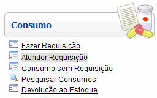
Ao clicar no formulário, o sistema exibirá a seguinte tela: 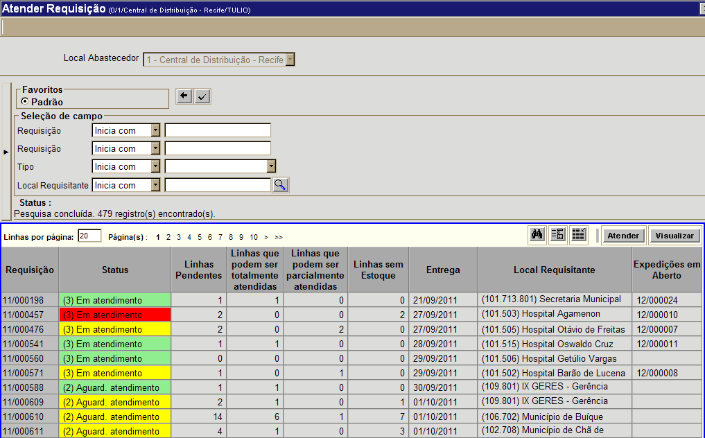
2º
Passo: após
configurar os filtros da pesquisa, clique no botão 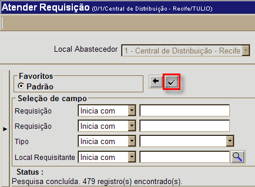 3º Passo: selecione com um clique a linha da requisição que deseja atender. Para selecionar uma requisição, basta clicar em qualquer um dos campos da linha (ver imagem abaixo). 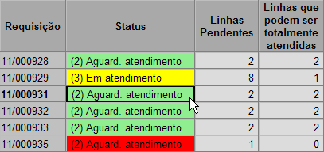 Exemplo:
a requisição 11/000931 está selecionada Observação: edite a quantidade de linhas da grade exibidas por página e, ao lado, a página de exibição (ver imagem abaixo). Clique no número da página desejada para ver as outras requisições aguardando consumo. 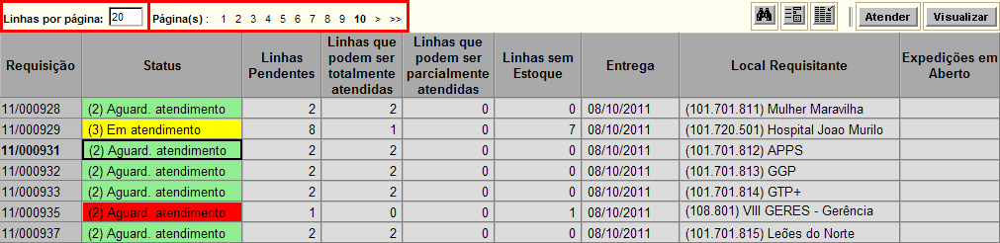
Legenda de cores
O status das requisições são exibidos em três cores: a) verde: todos os produtos contidos esta requisição possuem estoque o suficiente para atender a demanda. b) amarelo: apenas alguns produtos contidos esta requisição possuem estoque o suficiente para atender a demanda. c) vermelho: nenhum produto desta requisição possui estoque o suficiente para atender a demanda. 4º Passo: após selecionar a requisição, clique no botão para abri-la na tela "Fazer Transferência". Se desejar apenas visualizar os detalhes da(s) linha(s) da requisição, clique no botão  . .
Na tela "Fazer Transferência", caso algum dos produtos não possua quantidade suficiente em estoque, o mesmo terá a quantidade exibida em vermelho. 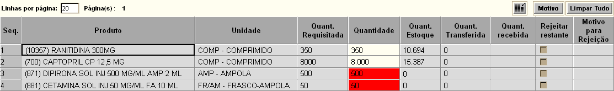
5° Passo: confira os dados da requisição e clique no botão para confirmá-la. Caso o botão esteja desabilitado, posicione o mouse em cima do mesmo para ver a razão de indisponibilidade (ver imagem abaixo). 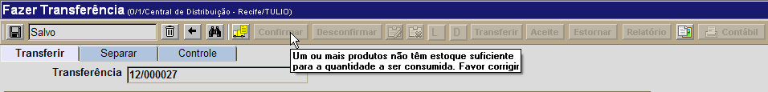
Para que uma transferência possa ser confirmada, caso um ou mais
produtos desta não contem com estoque suficiente para atendimento, o
campo "Quantidade" da grade
para estes produtos deverá ter as quantidades ajustadas conforme o
estoque atual. Em seguida, neste caso, clique no botão
Importante: após a confirmação da transferência, o botão estará habilitado caso algum dado dos produtos deva ser revisado. Lembre-se que, uma vez desconfirmada a transferência, ela deverá ser confirmada novamente. 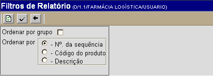
Passos para o ordenamento dos produtos da lista de separação:
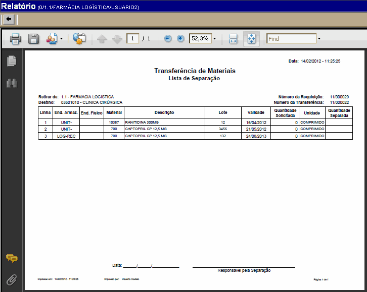
Para imprimir o relatório, clique no botão Após imprimir a lista
de separação, clique no botão Assim que a lista de separação é impressa, o botão [Cancelar Lista de Separação] estará habilitado para cancelamento da separação. Lembre-se que uma vez cancelada, a lista de separação deverá ser impressa novamente. 7° Passo: informe os dados da separação na aba "Separar". No campo "Quant. Transferida", informe a quantidade separada para transferência. 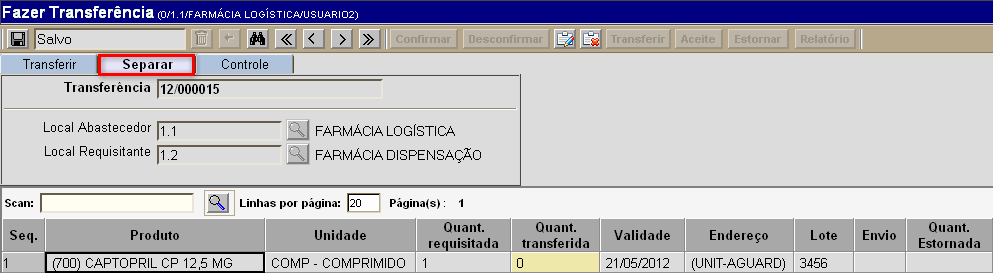
Para informar um lote diferente do lote sugerido pelo sistema, basta selecionar com um clique a linha do produto desejado e observar que todos os endereços e lotes disponíveis são exibidos na parte inferior da tela (veja imagem abaixo). Em seguida, clique no endereço/lote desejado. 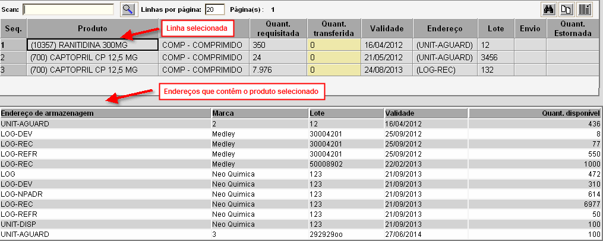 8° Passo: clique no botão 9° Passo: em seguida, clique no botão para processar a transferência. O status da transferência será alterado para "2 - Enviada". Estorno de transferênciaVocê pode decidir desfazer uma transferência já enviada. Lembre-se que só é possível estornar uma transferência caso o status da mesma seja Enviada e haja estoque o suficiente no local para os produtos do estorno. Além disso, a ação de estorno só pode ser realizada a partir do local de envio.1° Passo:
após abrir o registro de transferência na tela "Fazer Transferência",
clique no botão 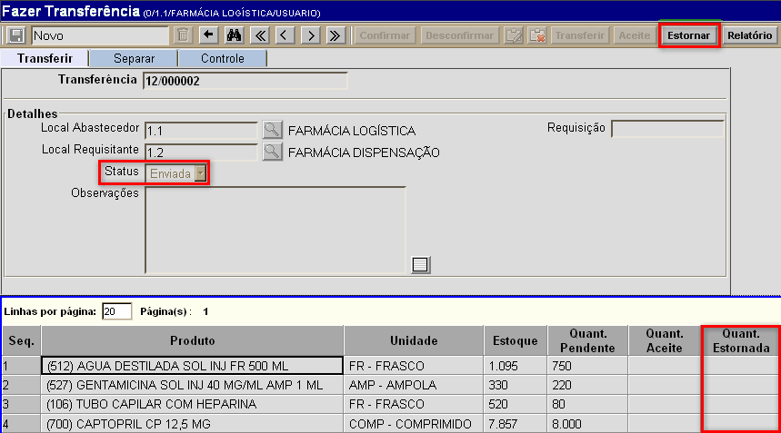 Após clicar no botão  , a tela "Estorno de transferência"
será aberta para a transferência em questão. Ela carregará os dados dos
produtos contidos na transferência que ainda não foram estornados. , a tela "Estorno de transferência"
será aberta para a transferência em questão. Ela carregará os dados dos
produtos contidos na transferência que ainda não foram estornados.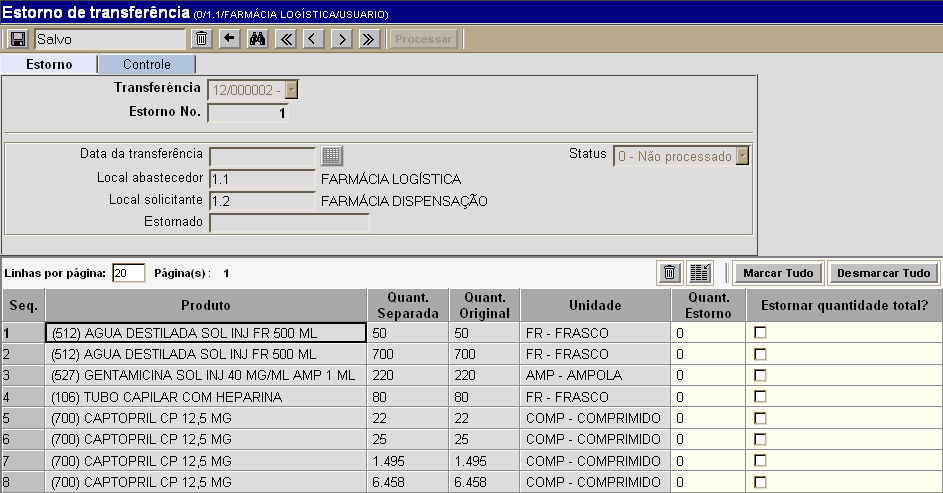
2° Passo: informe na grade os produtos e quantidades para o estorno. Informe na coluna "Quant. Estorno" as quantidades para o estorno dos produtos. Para estornar a quantidade total do produto transferido, marque o campo "Estornar quantidade total". Se desejar estornar a quantidade total transferida de todos os produtos, clique no botão  .
Da mesma forma, utilize o botão .
Da mesma forma, utilize o botão  para as marcações da coluna "Estornar quantidade total". para as marcações da coluna "Estornar quantidade total".3° Passo: após especificar produtos e quantidades, clique no botão  para salvar as informações. para salvar as informações.4° Passo: clique no botão  para
concluir o estorno. para
concluir o estorno.
|
 para retornar os resultados.
para retornar os resultados.  [Imprimir] do navegador.
[Imprimir] do navegador. para voltar à tela
principal da transferência.
para voltar à tela
principal da transferência.